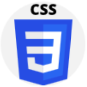

Junior-Specialist
В данный момент я работаю ... в ... /осваиваю специальность …….. в университете …... Я планирую работать в компании ….., филиал которой базируется в Минске (Беларусь). Я хочу знать и уметь применять как можно больше современных технологий, чтобы превзойти конкурентов широким диапазоном навыков и пройти любое собеседование.
моя страница на linkedin.com (или jobs.tut.by)
Проектирование пользовательского опыта, юзабилити и информационной архитектуры сайтов с учетом потребностей ЦА, прототипирование структуры контента и конверсионных интерфейсов.
Используются: Яндекс.wordstat, mindmeister.com, EskOne, draw.io.
Язык гипертекстовой разметки. При помощи html создается именно логическая структура документа: в нем расставляются специальные метки, называемые тегами, которые впоследствии опознаются браузером для отображения на экране.
Каскадные таблицы стилей. Используются для описания внешнего вида веб-контента: задания цветов, шрифтов, расположения и других аспектов представления страницы. Основная цель CSS – отделение содержимого HTML и его оформления.
веб-разработчик, продукт-менджер, проект-менеджер, веб-маркетолог, веб-дизайнер, верстальщик, веб-аналитик, ux-аналитик, контент-маркетолог, e-mail-маркетолог, менеджер по контекстной рекламе, трафик-менеджер, копирайтер, тестировщик, seo-оптимизатор, smm-менеджер, таргетолог, администратор сайта, frontend-девелопер, backend-девелопер
Рейтинг среди других профессий на рынке:
|
Востребованность – 78% |
|
Оплачиваемость – 86% |
|
Конкуренция – 44% |
|
Входной барьер – 50% |
|
Перспективы – 91% |